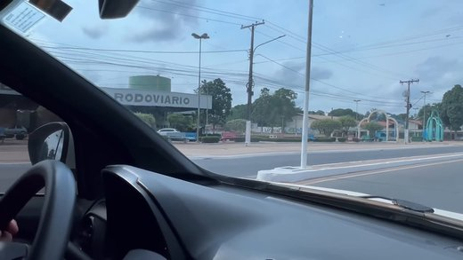

00:01:50.560
Terminal com a inscrição Rodoviário visto pela janela do carro. Um canteiro e postes ficam à frente da área de embarque.
Laranjal do Jari (AP) · confirmado
O apresentador e o guia identificam o terminal rodoviário e comentam as saídas de ônibus para Macapá.
Transcrição · 00:01:39 | 00:01:45 | 00:01:53
Turismo Aqui — quadro de vídeo publicado no YouTube